HOMEART Academy — встречи, эфиры и поездки на фабрики
HOMEART Academy — профессиональное сообщество для дизайнеров и архитекторов. Онлайн-лекции, камерные встречи в шоуруме, презентации новых коллекций, разговоры об искусстве и материалах, знакомство с фабриками и поездки на производства.
Molteni&C Outdoor · Yauza, 2023
HOMEART — это больше чем шоурум.Это место встречи и вдохновения.
Здесь мы проводим мероприятия с лучшими экспертами дизайна, архитектуры и искусства, чтобы обмениваться опытом и формировать сообщество людей, влюблённых в своё дело.
Стать участником AcademyЧто вы получаете в HOMEART Academy
Экспертиза из первых рук
Команда HOMEART ежедневно работает с мебелью, кухнями и сложными интерьерными решениями, поэтому знает не только особенности предметов, но и нюансы их реализации в проекте. Представители фабрик делятся знаниями о материалах, технологиях и конструктивных решениях. А в шоуруме всё это можно увидеть вживую, оценить в деталях и обсудить с экспертами.
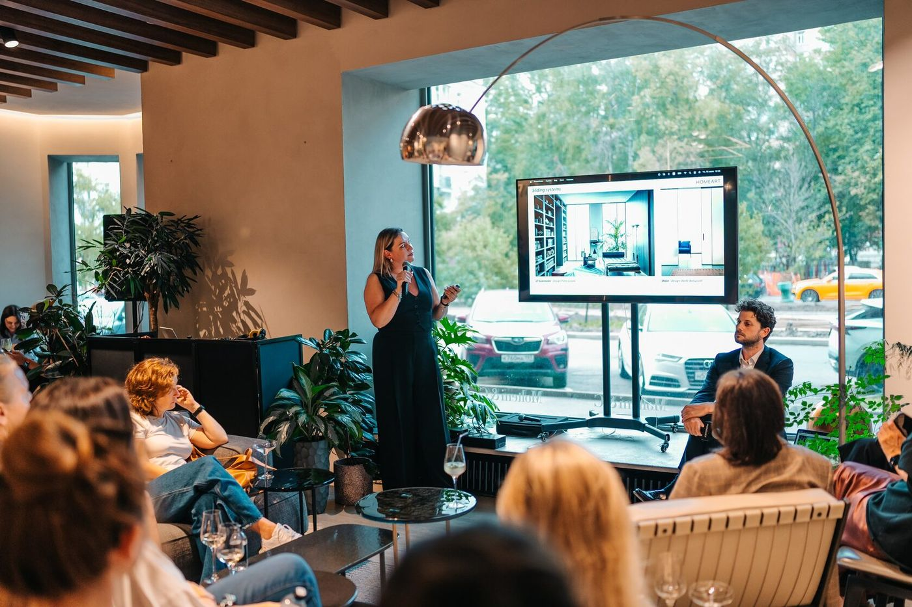
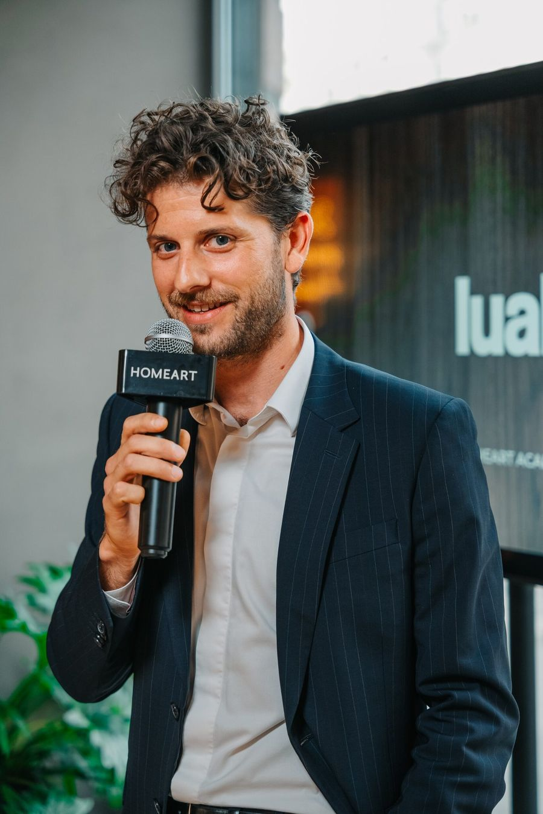
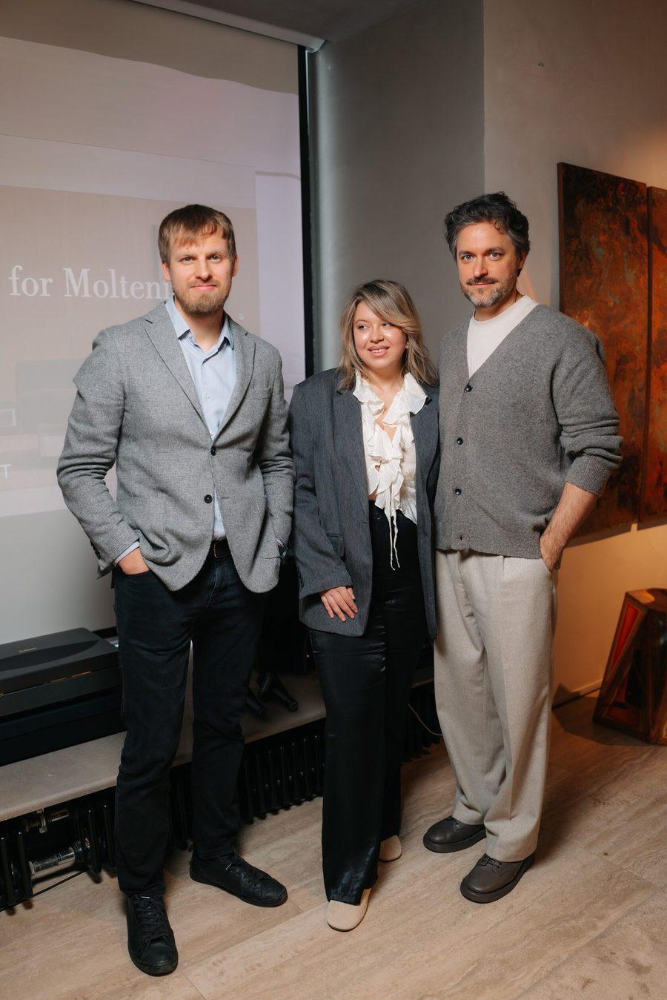
Новинки и тренды
Мы следим за международными выставками, новыми коллекциями и тенденциями в дизайне, чтобы выделять главное и делиться этим с профессиональным сообществом. На встречах разбираем новинки и показываем на конкретных примерах, как идеи и решения можно интегрировать в проекты.

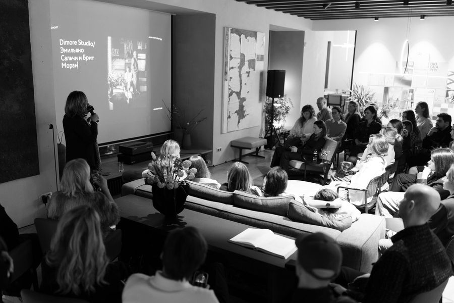
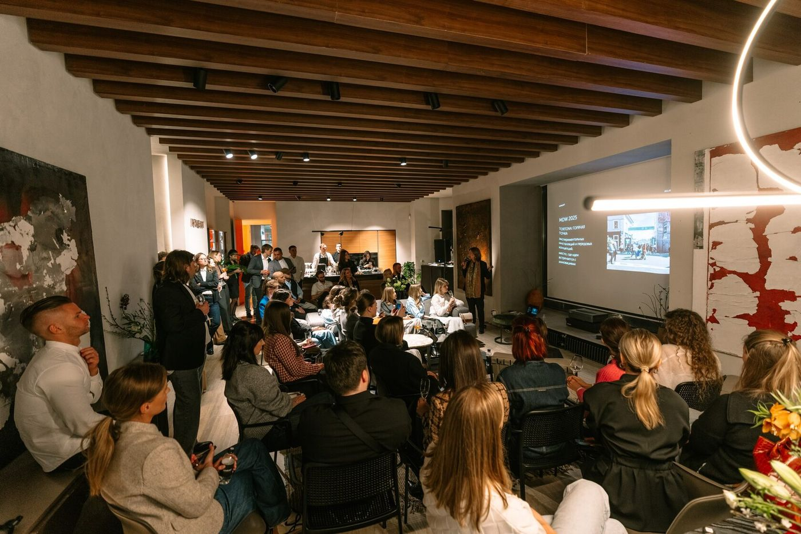
Круг своих
HOMEART Academy объединяет дизайнеров, архитекторов, представителей фабрик и экспертов индустрии. Это пространство для профессионального диалога, обмена опытом и новых знакомств.
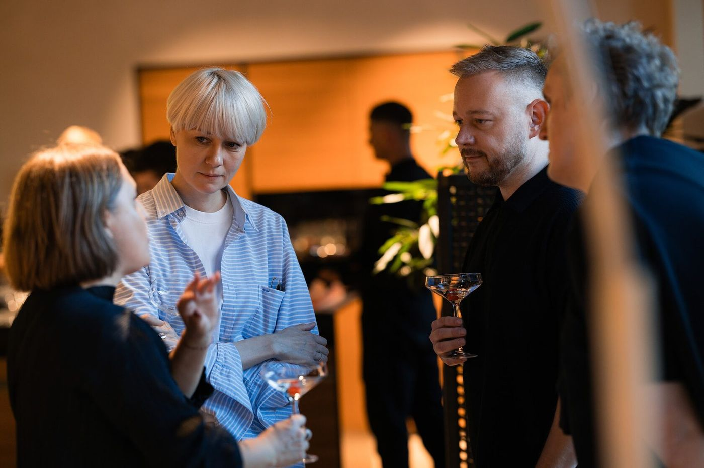
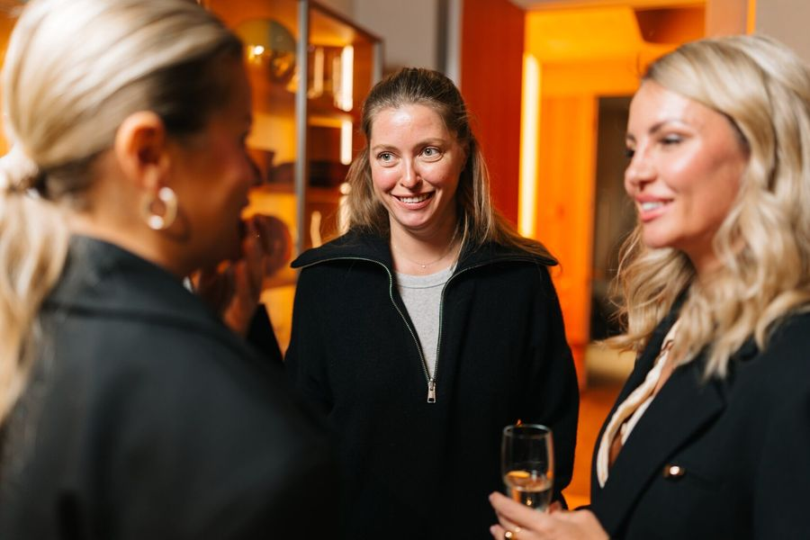
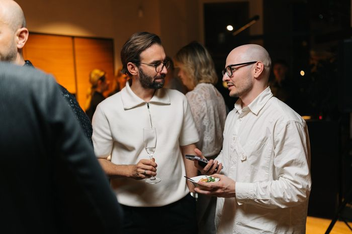
Вдохновение за пределами профессии
Искусство, гастрономия, музыка и культурные события становятся частью программы HOMEART Academy. Мы организуем встречи с галереями, шефами и представителями творческих индустрий, чтобы открывать новые перспективы и находить идеи за пределами привычного профессионального контекста.
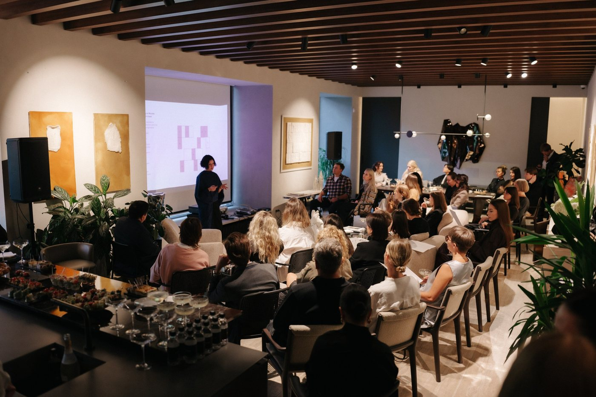
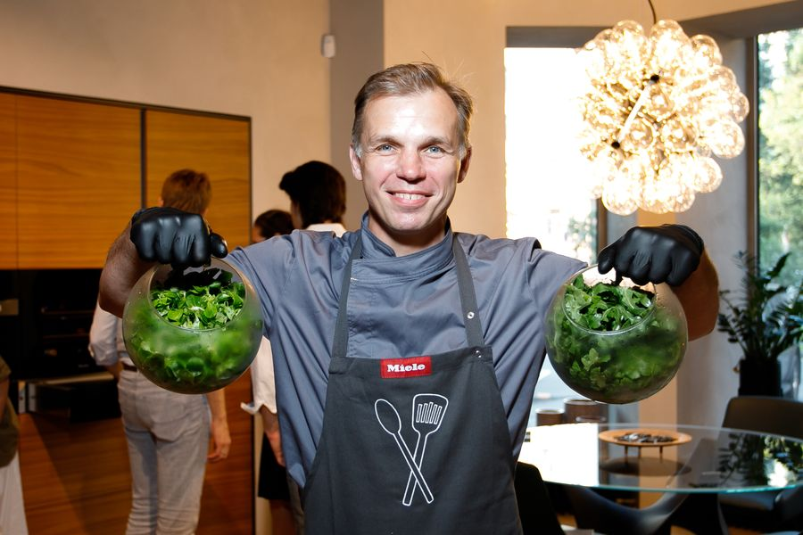
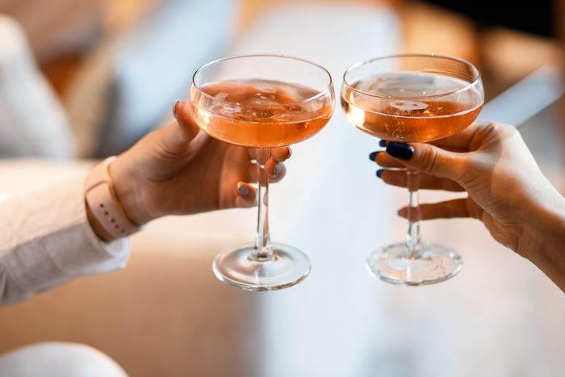
Станьте частью HOMEART Academy
- 01Откройте бота
Перейдите в HOMEART Community в Telegram — @homeart_interior_bot.
- 02Заполните короткую анкету
Ответьте на несколько вопросов о себе и своей профессиональной практике.
- 03Присоединяйтесь к сообществу
После рассмотрения анкеты вы получите доступ к закрытой группе, где мы делимся анонсами онлайн-лекций, приглашаем на камерные встречи в шоуруме и совместные выходы в галереи, театры и другие культурные пространства.